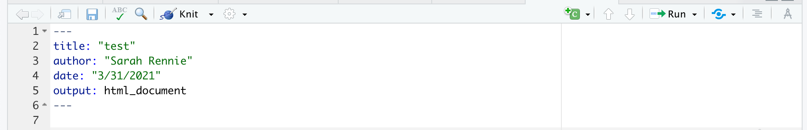

Chapter 2 Introduktion til R Markdown
2.1 Hvad er R Markdown?
R Markdown kan bruges som en nem måde at arbejde med R til projekter på. Her kan du kombinere din R-kode, output og tekst i samme dokument, og derudover fremviser et pænt HTML dokument fra det. Man anvender R Markdown til følgende:
- Skrive, gemme og køre R kode
- Få direkte adgang til datasæt
- Lave rapporter som kan deles med andre
- En nem tilgang til at forstå andres kode, for eks. gennem eksemplerne og opgaverne fra dette kursus
Du kommer til at bruge R markdown gennem hele kurset, og jeg anbefaler, at du bruger det udelukkende til alle opgaverne.
2.2 Installere R Markdown
R Markdown er ligesom R gratis og ‘open source.’ Den fungerer indenfor RStudio, så
Den kan installeres indenfor R ved at bruge den følgende kommando :
install.packages("rmarkdown")2.3 Videodemonstrationer
Jeg har lavet to korte videoer som kan ses her:
Video 1:
- Jeg viser hvordan man laver et nyt dokument i R Markdown
- Jeg viser hvordan man skriver tekst ind i dokumentet
- Jeg viser hvordan man bruger “knit” til at lave en HTML-rapport
- Jeg viser hvordan man opretter og kører kode chunks
Link her hvis det ikke virker nedenunder: https://vimeo.com/541035944
Video 2:
- Jeg viser en kort analyse med et datasæt
- Jeg indlæser de data og laver en forløbig undersøgelse
- Jeg laver en paired t-test og skriver konklusioner
- Jeg tjekker antagelserne omkring den normale fordeling
Link her hvis det ikke virker nedenunder: https://vimeo.com/541232690
2.4 Lave et nyt dokument i R Markdown
Husk at indlæse pakken i RStudio:
library(rmarkdown)## Warning: pakke 'rmarkdown' blev bygget under R version 4.0.5Man åbner et nyt rmarkdown dokument ved at trykke “New” > “New File” > “New R Markdown….” Man kan også trykke på “+” knappen øverst i venstre hjørne.
Hvordan man åbner et nyt R Markdown dokument
I de fleste tilfælde arbejder vi med HTML dokumenter, men man har også andre muligheder (PDF/Word/Shiny osv…).
I mange tilfælde er det bekvemt at se resultaterne af din R kode inline, det vil sige, indenfor din .Rmd fil indenfor det R studio vindue. Til længere opgaver er det god praktisk at sikre, at man få altid en HTML rapport, der viser resultaterne. Til eksamen forventer jeg, at du afleverer en HTML rapport til mig. Det er derfor dit ansvar til at sikre, at din kode fungerer og du kan dermed successfuldt producere en fil med din løsninger.
With HTML, you can easily view it in a web browser. compiling an HTML document is generally faster than generating a PDF or other format.

Hvordan man åbne et nyt R Markdown dokument
2.4.1 YAML
YAML Header: Controls certain output settings that apply to the entire document.
Den første sektion hedder ‘YAML.’ (Dette står for ‘YAML Ain’t Markup Language’).
 Det indeholder oplysninger om dokumentet, og her kan man specificere forskellige muligheder - fk. titel, forfatter, output-type (fks. HTML eller PDF), dato, osv.
I de fleste tilfælde kan vi bare nøjes med at bruge standard indstillinger, men hvis man gerne vil lære mere om de forskellige muligheder med YAML, kan man læse her:
https://bookdown.org/yihui/rmarkdown/html-document.html
eller se en liste af muligheder her på dette cheatsheet:
https://www.rstudio.com/wp-content/uploads/2016/03/rmarkdown-cheatsheet-2.0.pdf
2.4.2 Globale options
Bemærke at der også er tekst som ser ud som følgende:

Hvordan man åbner et nyt R Markdown dokument
Med funktionen opts_chunk$set() kan man specificere de globale indstillinger, man gerne vil have, som styrer hvordan det færdige dokument ser ud. I dette tilfælde er de fleste parametre angivet som ‘default’ (da de ikke er nævnt eksplicit), og echo er den eneste der har noget andet angivet. Hvis echo er TRUE, så betyder det, at når man kører sine kode og kompilerer dokumentet, så kan man også se den kode, der er kørte, ligesom dens output, som en del af den færdige HTML, der fremvises.
2.5 Skrive baseret tekst
Her er nogle nyttige måder, man kan skrive tekst på, i opgaverne eller rapporter.
*italic* **bold**
_italic_ __bold__italic bold
italic bold
2.6 Kode indenfor teksten (‘Inline chunks’)
This is useful when you want to include information about your data in the written summary. We’ll add a few examples of inline code to our R Markdown Guide to illustrate how it works.
De fleste koder skrives indenfor såkaldte ‘chunks’ som vi kommer til nedenfor. Men nogle gange kan det være nyttigt at skrive kode direkte indenfor teksten. Dette gøres ved at skrive
Her er min `kode`som ser sådan ud indenfor teksten:
Her er min kode
I dette tilfælde, bliver koden ikke kørte. Hvis man vil køre koden indenfor teksten, kan man skrive (for eksempel):
De gennemsnitlige antal af observationer er `r mean(c(5,7,4,6,3,3))`som ser sådan ud indenfor teksten:
De gennemsnitlige antal af observationer er 4.6666667
Og hvis man glemmer ‘r,’ så bliver koden ikke kørte:
De gennemsnitlige antal af observationer er `mean(c(5,7,4,6,3,3))`giver:
De gennemsnitlige antal af observationer er mean(c(5,7,4,6,3,3))
2.7 Kode chunks
Man kan oprette en ny chunk, enten ved at trykke på de Insert a new code chunk knap ovenpå, eller ved at trykke Cmd+Option+I på tastaturet (hvis man bruger MAC) eller Ctrl+Alt+I (hvis man bruger Windows).
Tryk på den grønne pile, der hedder Run current chunk for at køre hele den chunk. Resultatet kan ses lige nedenunder. Man kan også trykke på den grønne pile som ligger øverst til højre i den kode chunk.
Det er ofte hurtigere at bruge Run current chunk i stedet for at Knit (se nedenfor) hver gang man vil køre kode, fordi her kører man kun den enkele chunk, man er interesset i, i stedet for det hele dokument (som er tilfældet med Knit).
2.7.1 Chunk options
One of the great things about R Markdown is that you have many options to control how each chunk of code is evaluated and presented. This allows you to build presentations and reports from the ground up — including code, plots, tables, and images — while only presenting the essential information to the intended audience. For example, you can include a plot of your results without showing the code used to generate it.
Mastering code chunk options is essential to becoming a proficient R Markdown user. The best way to learn chunk options is to try them as you need them in your reports, so don’t worry about memorizing all of this now. Here are the key chunk options to learn:
For eksempel, en chunk med en `option’ nævnt ser sådan ud (fjerne # symbol)
#```{r,eval=FALSE}
#
#```Her er nogle muligheder (sektionen “Embed code with knitr syntax”):
https://www.rstudio.com/wp-content/uploads/2016/03/rmarkdown-cheatsheet-2.0.pdf
Her er seks populær muligheder som jeg har kopiret fra nettet:
include = FALSE- prevents code and results from appearing in the finished file. R Markdown still runs the code in the chunk, and the results can be used by other chunks.
echo = FALSE- prevents code, but not the results from appearing in the finished file. This is a useful way to embed figures.
message = FALSE- prevents messages that are generated by code from appearing in the finished file.
warning = FALSE- prevents warnings that are generated by code from appearing in the finished.
fig.cap = "..."- adds a caption to graphical results.
eval = FALSE- does not evaluate the code
2.8 Knit kode
Man bruger Knit for at gengive filen i HTML form. Når man trykke på Knit, bliver alle kode i filen kørt og et HTML dokument fremvises. Man kan også bruge Preview, der kører ikke kode chunks, men bruger kun koden som er blevet kørt før.
2.10 Problemstillinger
Jeg har lavet en kort quiz i Absalon, som hedder “Quiz - R Markdown.”
Lave et nyt R Markdown dokument i R Studio. Prøve at lave en list og nogle overskrifter af forskellige størrelser.
Tryk på
Knitog tjekke at et html-dokument fremvises som forventet.Edit the title of the markdown document to My first Markdown document, and click Knit again. Notice how the title of the output document changes
Tilføj en ny R chunk, med noget kode. e.g.
x <- rnorm(20,1,2) #make a sample of normally distributed data
plot(x)Øve med at trykke enten på den grønne pile, eller på knit. Prøve også at køre linjene en ad gangen med Ctrl + Enter.
Bemærk, at det tager længere til at knit hver eneste gang, end at bare køre chunks individ indenfor dit dokument.
Kør en chunk Trykke på den hjule i øverste hjørn af chunket og ændre på de forskellige chunk options. Tryk på ‘knit’ for at se, hvad der sker.
Skriv matematik Bruge
$ $til at skrive en lindring ind i teksten, \(\bar{x}\). Hint:$\sum_{i=1}^{n}$and${x_{i}}$.Ændr dokument type Hver gang du knit, du lave en HTML dokument. Prøve at lave en andet type dokument i stedet for - erståtte html_document med word_document.
The code in Rmd-file must be self-contained in the sense that you cannot use datasets (or other objects) that you have imported “outside” the Rmd-file. You therefore have to include the commands for data import in the file.
- Vigtig at husk Tilføj følgende chunk til dit dokument og trykke på “knit.” Få du en fejlmedelse?
data("mtcars")
mtcars %>% filter(cyl==6)Bemærk, at du får en fejlmeddelse. Det er fordi, du endnu ikke har indlæst den påkrævet pakke til at få koden til at virke. Det kan ske, selvom du måske har indlæste pakken i Console eller i Packages tab.
- Først prøve at køre “library(tidyverse)” indenfor Console og dernæst prøve at knitte dit dokument igen - du får stadig en fejmeddelse.
- Tilføj følgende øverst i ovenstående chunk, som du tilføjede i dit dokument. Nu bør dit dokument knitte.
library(tidyverse)- Ind på Absalon har jeg lagt en R Markdown fil som hedder “R Markdown opgave,” som I kan bruge til at starte med at arbejde lidt med R Markdown baserede opgaver. Det kombinerer koncepter fra de forudgående kapitel om de grundlæggende ting i R og statistik.
2.11 Slut for ugen
Huske at sende mig eventuelle spørgsmål, som jeg kan svare på i Zoom rummet (sende gerne via mail eller chat).
Næste gang begynder vi at arbejde vi med ggplot2.
2.12 Ekstra links
Her er en ‘quick tour’ som kan være nyttig (valgfri) https://rmarkdown.rstudio.com/authoring_quick_tour.html
Bonus: R Markdown Cheatsheet RStudio has published numerous cheatsheets for working with R, including a detailed cheatsheet on using R Markdown! The R Markdown cheatsheet can be accessed from within RStudio by selecting Help > Cheatsheets > R Markdown Cheat Sheet.